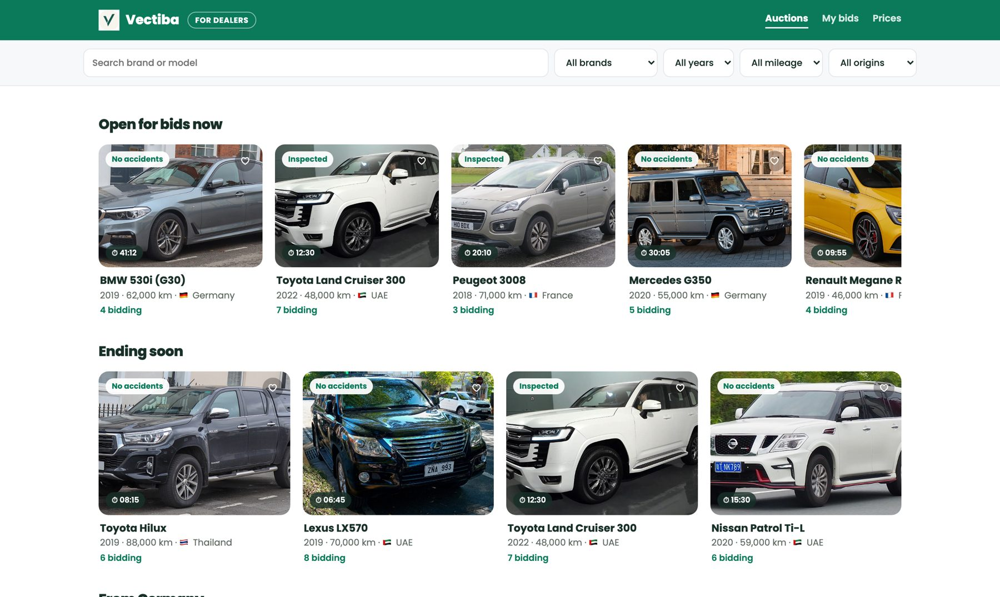

The same car sells for a different price in every country. We connect the people that language, borders and distance kept apart.
The same car is worth different amounts in different countries — and that difference should be yours.
Every few years, when it's time to sell, there's always that nagging doubt. The same car is valued differently in every country, and the real selling price differs too. Somewhere there is always a dealer who would value your car higher. Even if that dealer is abroad, all you need is to reach them — remotely. Until now, language, distance, customs and paperwork simply kept you from ever meeting. Vectiba connects the two of you directly, with AI.
The Vectiba AI agent packages your car so dealers abroad can trust it and bid high, then opens it as an auction. You only need one dealer who really wants your car — you just pick the highest price, within 48 to 72 hours.
A dealer in another country can pay far more than the one nearby. But that dealer has no way to find this car — so the difference goes to middlemen.
Most people take the first easy offer nearby, before a buyer in another country ever hears about the car.
Distance, language and complicated paperwork keep the seller and the buyer who'd pay most from ever meeting.
Referrals and brokers move cars, but the seller and the buyer never connect directly — so the extra money goes to the middle.
Why now: AI can finally inspect a car remotely, translate across languages, and work out the full landed cost — so this works today.
Still sending staff out to inspect cars? Still buying only through people you happen to know? Have language, distance, customs and paperwork been holding you back?
Access used cars anywhere in the world and deal directly with the owner, remotely — no agencies, no introductions in between.
Ask Vectiba AI to check exactly what matters before you buy to resell. You're the pro — the AI backs your judgment.
Language, distance, duties, customs and sea freight — all solved. Vectiba was built by a dealer who sold more cars than anyone.
Shorten the chain, and sellers earn more while buyers land a more reasonable end cost.
Photos, mileage, history — checked so a faraway dealer can trust it without visiting.
Shipping, customs and fees per country — everyone sees the real landed cost before bidding.
Dealers from several countries make offers. You see your real take-home on each, and pick.

The dealer works out the landed cost in their own currency at today's rate and sends a sealed quote — no one sees anyone else's.
Eight years in the car business — new-car salesman, used-car dealer, then CEO of a dealership and export company, trading more than 1,000 cars a year to around 15 countries.
Six months of market research, more than ten countries visited in person — meeting the partners who share this vision on the ground, on the other side of the world.
I was once a dealer who couldn't sell even two cars a month. Using a platform like this, I became a dealer selling over 1,000 cars a year. That experience is where Vectiba began.
Reach the founder directly.
Leave a few details and the founder will reach out personally.